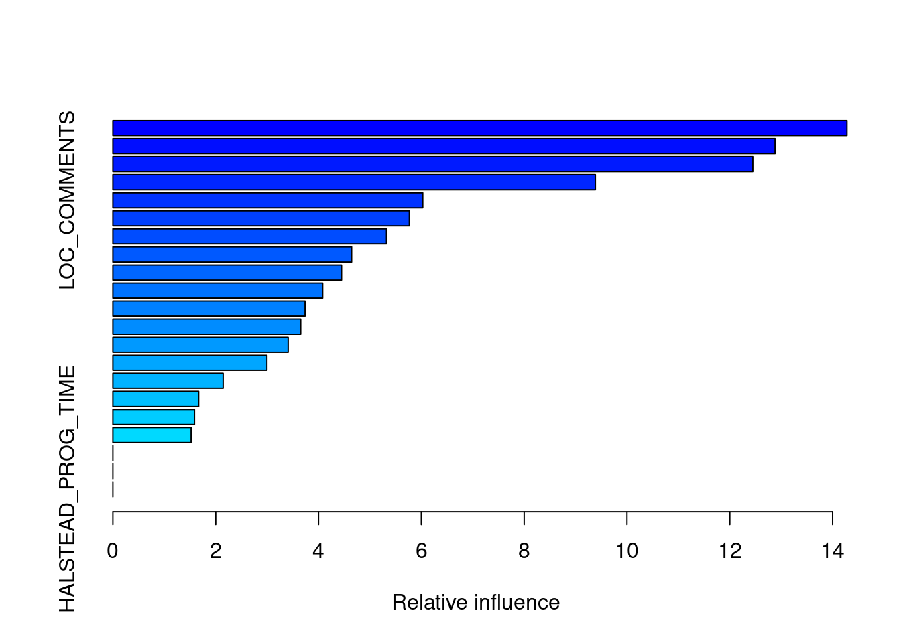
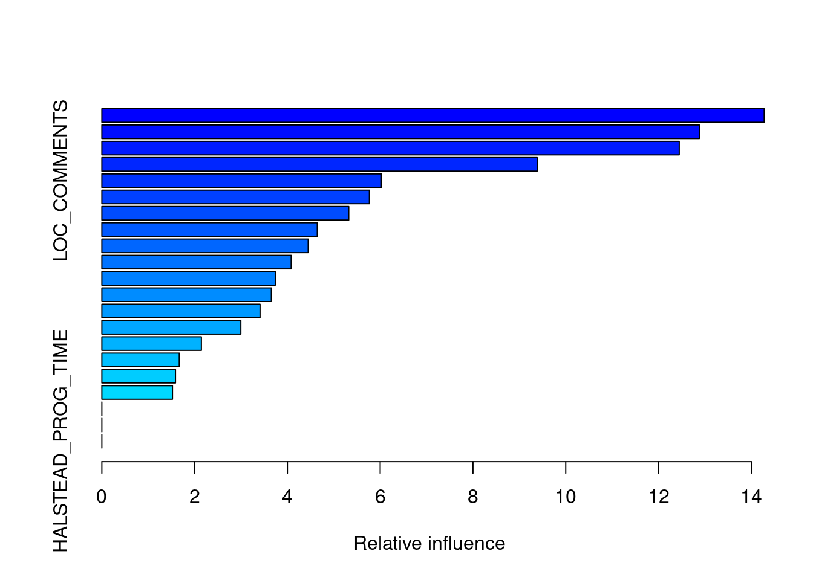

Social Network Analysis in SE
In this example, we will data from the MSR14 challenge. Further information and datasets: http://openscience.us/repo/msr/msr14.html
Similar databases can be obtained using MetricsGrimoire or other tools.
In this simple example, we create a network form the users and following extracted from GitHub and stored in a MySQL database.
We can read a file directely from MySQL dump
library(RMySQL)
# Connecting to MySQL
mydb = dbConnect(MySQL(), user='msr14', password='msr14', dbname='msr14', host='localhost')
# Retrieving data from MySQL
sql <- "select user_id, follower_id from followers limit 100;"
rs = dbSendQuery(mydb, sql)
data <- fetch(rs, n=-1)
Alternatively, we can create e CSV file directly from MySQL and load it
$mysql -u msr14 -pmsr14 msr14
> SELECT 'user','follower'
UNION ALL
SELECT user_id,follower_id
FROM followers
LIMIT 1000
INTO OUTFILE "/tmp/followers.csv"
FIELDS TERMINATED BY ','
LINES TERMINATED BY '\n';
# Data already extracted and stored as CSV file (for demo purposes)
dat = read.csv("./datasets/sna/followers.csv", header = FALSE, sep = ",")
dat <- head(dat,100)
We can now create the graph
##
## Attaching package: 'igraph'
## The following objects are masked from 'package:rgp':
##
## %->%, normalize
## The following object is masked from 'package:arules':
##
## union
## The following object is masked from 'package:class':
##
## knn
## The following object is masked from 'package:modeltools':
##
## clusters
## The following objects are masked from 'package:lubridate':
##
## %--%, union
## The following objects are masked from 'package:dplyr':
##
## %>%, as_data_frame, groups, union
## The following objects are masked from 'package:stats':
##
## decompose, spectrum
## The following object is masked from 'package:base':
##
## union
# Create a graph
g <- graph.data.frame(dat, directed = TRUE)
Some values:
## IGRAPH DN-- 95 100 --
## + attr: name (v/c)
Plotting the graph:
layout1 <- layout.fruchterman.reingold(g)
plot(g, layout1)
## Warning in if (axes) {: the condition has length > 1 and only the first
## element will be used

Other layout
plot(g, layout=layout.kamada.kawai)

A tk application can launched to show the plot interactively:
plot(g, layout = layout.fruchterman.reingold)
Some metrics:
metrics <- data.frame(
deg = degree(g),
bet = betweenness(g),
clo = closeness(g),
eig = evcent(g)$vector,
cor = graph.coreness(g)
)
#
head(metrics)
## deg bet clo eig cor
## 6183 1 0 0.0001131733816 0.00000000000000001031406355 1
## 49199 1 0 0.0001131733816 0.00000000000000001547109532 1
## 71080 1 0 0.0001131733816 0.00000000000000002062812710 1
## 162983 1 0 0.0001131733816 0.00000000000000002062812710 1
## 772 3 0 0.0001156336725 0.10408536559473147153909167 2
## 907 1 0 0.0001131733816 0.00814183210922054742542109 1
To fix and to do: Explain metrics and better graphs
library(ggplot2)
ggplot(
metrics,
aes(x=bet, y=eig,
label=rownames(metrics),
colour=res, size=abs(res))
)+
xlab("Betweenness Centrality")+
ylab("Eigenvector Centrality")+
geom_text()
+
theme(title="Key Actor Analysis")
V(g)$label.cex <- 2.2 * V(g)$degree / max(V(g)$degree)+ .2
V(g)$label.color <- rgb(0, 0, .2, .8)
V(g)$frame.color <- NA
egam <- (log(E(g)$weight)+.4) / max(log(E(g)$weight)+.4)
E(g)$color <- rgb(.5, .5, 0, egam)
E(g)$width <- egam
# plot the graph in layout1
plot(g, layout=layout1)
Further information:
http://sna.stanford.edu/lab.php?l=1
Chapter 19 Social Network Analysis in SE
In this example, we will data from the MSR14 challenge. Further information and datasets: http://openscience.us/repo/msr/msr14.html
Similar databases can be obtained using MetricsGrimoire or other tools.
In this simple example, we create a network form the users and following extracted from GitHub and stored in a MySQL database.
We can read a file directely from MySQL dump
Alternatively, we can create e CSV file directly from MySQL and load it
We can now create the graph
Some values:
Plotting the graph:

Other layout
A tk application can launched to show the plot interactively:
Some metrics:
To fix and to do: Explain metrics and better graphs
Further information:
http://sna.stanford.edu/lab.php?l=1